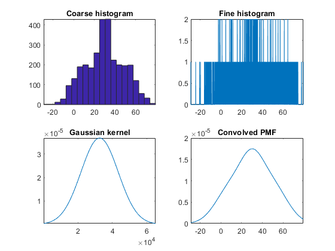
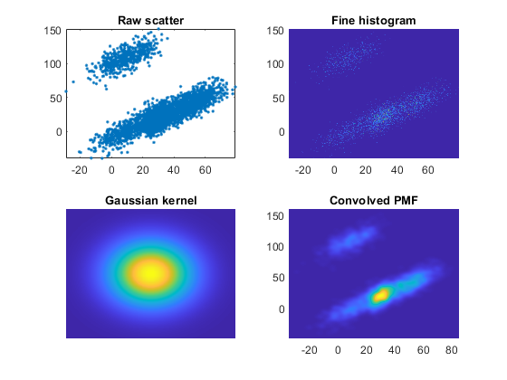

clear all
x = [normrnd(10, 10, 1, 1000),normrnd(30, 5, 1, 1000),normrnd(50, 10, 1, 1000)];
gck1 = gckernel();
setKernel(gck1,[3,3]);
gck1.setData(x,[10,0]);
gck1.convolve(x);
fh = figure;
set(fh, 'Name', '1D Gaussian convolution example')
subplot(2, 2, 1);
hist(x, 20);
ax = gca;
axis tight;
title('Coarse histogram');
subplot(2, 2, 2);
plot(gck1.xx, gck1.h);
axis tight;
title('Fine histogram');
subplot(2, 2, 3);
plot(gck1.cx);
axis tight;
title('Gaussian kernel');
subplot(2, 2, 4);
plot(gck1.x, gck1.p);
xlim(ax.XLim);
title('Convolved PMF');
y = [x(1:500)+ normrnd(100, 10, 1, 500), x(501:3000)-normrnd(10, 10, 1, 2500)];
gck2 = gckernel();
gck1.setData([x;y],[0,0]);
gck2.convolve([x;y]);
fh = figure();
set(fh, 'Name', '2D Gaussian convolution example')
subplot(2, 2, 1);
plot(x, y, '.');
axis tight;
title('Raw scatter');
subplot(2, 2, 2);
pcolor(gck2.xx, gck2.yy, gck2.H);
shading interp;
axis tight;
title('Fine histogram');
subplot(2, 2, 3);
pcolor(gck2.C);
shading interp;
axis tight;
axis off;
title('Gaussian kernel');
subplot(2, 2, 4);
pcolor(gck2.x, gck2.y, gck2.P);
shading interp;
axis tight;
title('Convolved PMF');
 